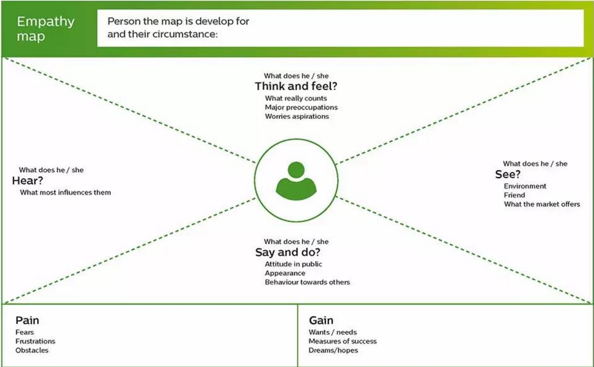

移情图（empathy map）
超越人口学特征，更好地理解客户的环境，行为，关注点和愿望。

如何使用：
首先，找出你的相关商业模式中可提供服务的所有客户细分群体。选出三个有希望的候选人，并选择一个开始客户描述分析。
对于每一个客户，给这个客户一个名字和一些人口统计特征，诸如收入、婚姻状况等等，然后回答一下的几个问题：
她看到是什么？
描述客户在她的环境里面看到什么
- 环境看起来像什么？
- 谁在她周围？
- 谁是她的朋友？
- 她每天接触什么类型的产品或服务（相对于所有市场产品和服务）？
- 她遭遇的问题是什么？
她听到的是什么？
描述客户所处环境是如何影响客户的
- 她的朋友说什么？她的配偶呢？
- 谁能真正影响她？如何影响？
- 哪些媒体渠道能影响她？
她真正的想法和感觉是什么？
设法概述你的客户所想的是什么
- 对她来说，什么事最重要的（她可能不公开说）？
- 想象一下她的情感。什么能感动她？
- 什么能让她失眠？
- 尝试着描述她的梦想和愿望？
她说些什么又做些什么？
想象这位客户可能会说什么或者在公开场合可能的行为
- 她的态度是什么？
- 她会给别人讲什么？
- 要特别留意在客户所说和她的真实想法与感受之间的潜在冲突。
这个客户的痛苦是什么？
- 她最大的挫折是什么？
- 在她和她想要事物或需要达到的目标之间有什么障碍？
- 她会害怕承担哪些风险？
这个客户想得到什么？
- 她真正想要和希望达到的是什么？
- 她如何衡量成功？
- 猜想一些她可能用来实现其目标的策略。